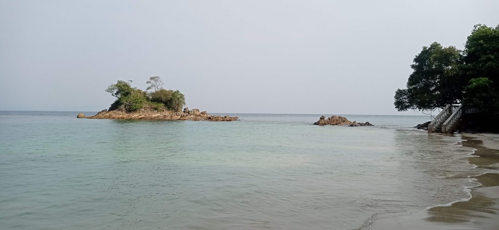
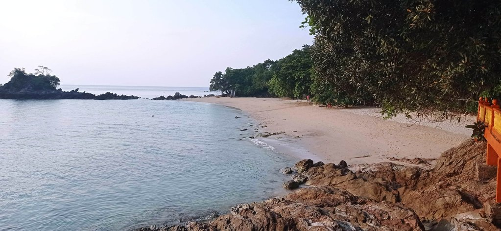

/ Kapas
8h30 réveil
9h00 petit déjeuner toujours au même endroit.
10h00 direction le nord de l’ile, mais le chemin est coupé et la mer haute. En revenant, nous testons les différentes criques. Elles sont toutes infestées de méduses transparentes. Nous finissons sur la plage de l’hôtel en compagnie de toutes les familles malaisiennes qui ont débarqué pour uen journée à la plage.

13h00 le soleil tape, avec Korydwen direction le sud de l’île, avant de revenir faire uen sieste comme tout le monde.

16h30 Nous retournons nager avec Nemo dans les coraux. Elouan voit une tortue. Je poursuis une raie avec Korydwen.
19h30 Après un passage à la douche, nous allons manger dans le restaurant de l’hôtel voisin, le Coral Beach.